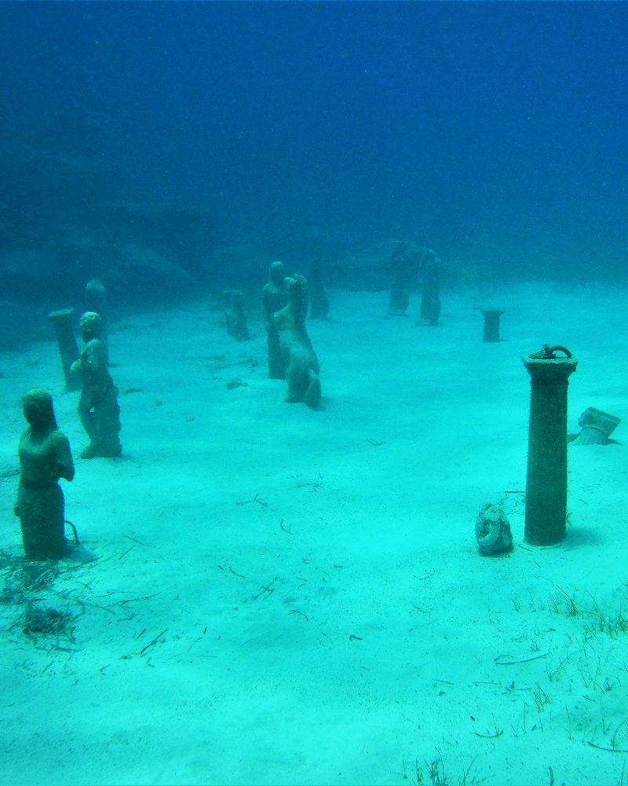
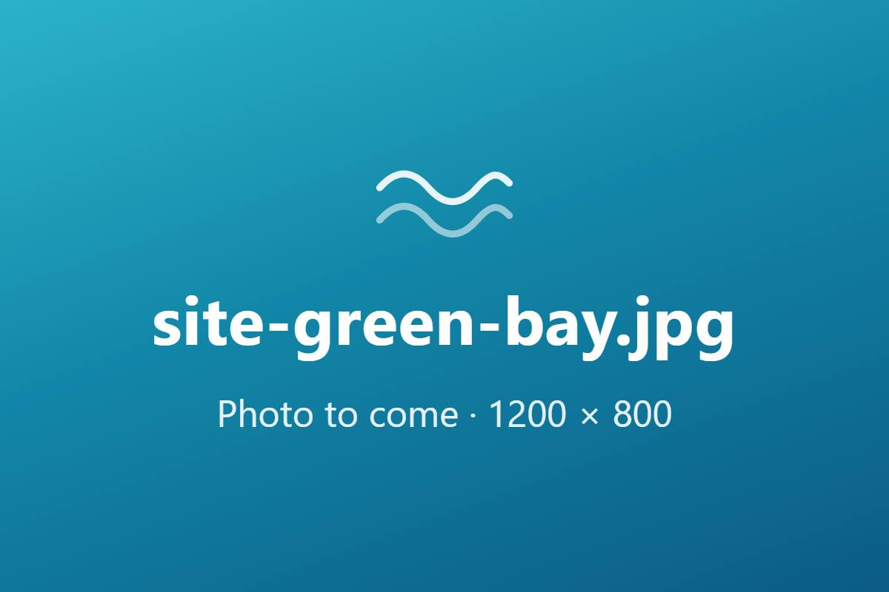
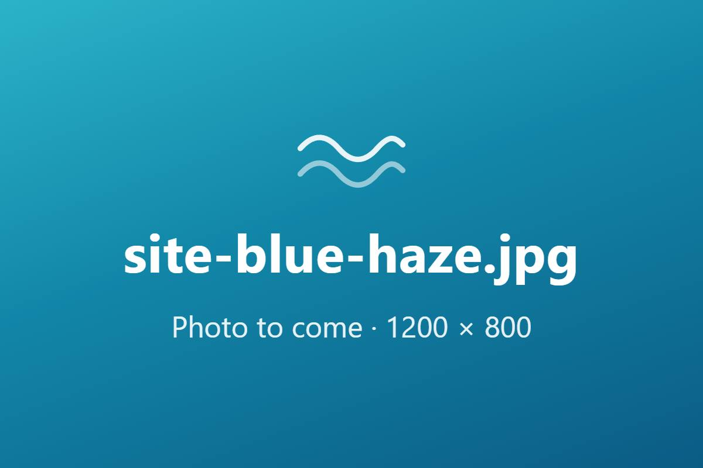
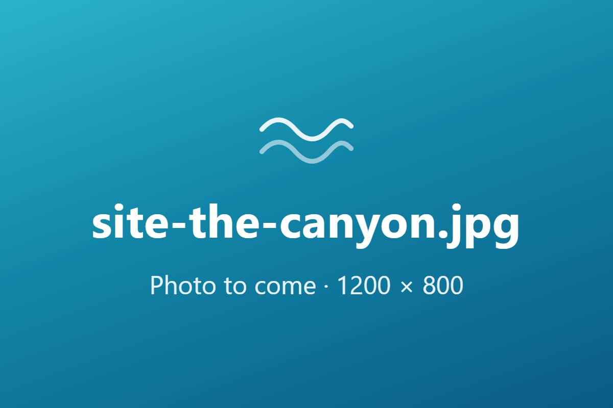
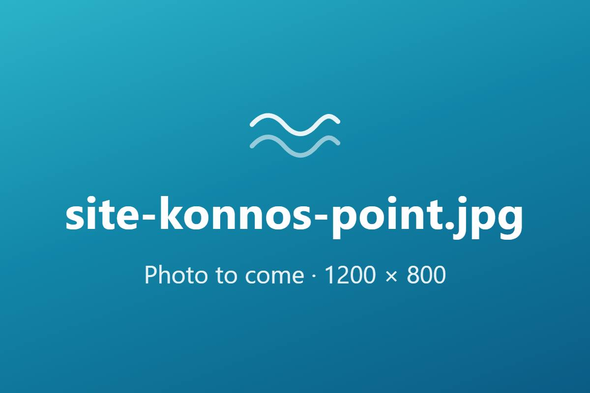
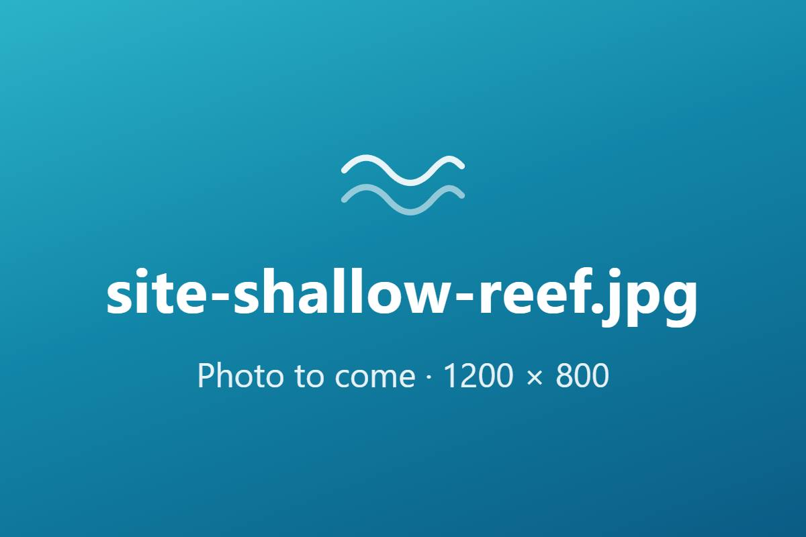
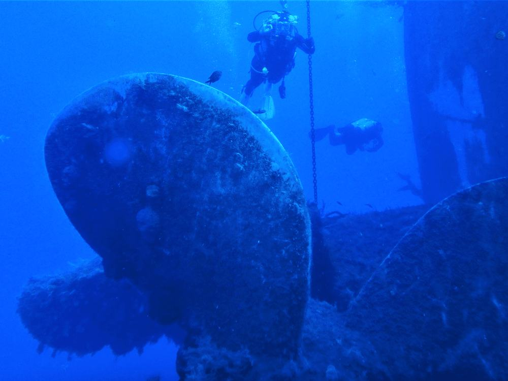

Local wreck
Liberty
Sunk in May 2009 as a dive site, the Liberty is a good wreck for wreck training and for underwater photography. Penetration is possible.
0 m Dive Trips
Local dives around Cavo Greko: nine sites, all from shore, usually two dives per trip.
Start in the shallows and follow the page down. The local sites come first; the wrecks wait further below, for divers certified to 30 m.

Local dives
Every one of our local dives starts from the shore around Cavo Greko, and a trip usually takes in two of them.
There is something here for beginners and for experienced divers alike. Tell us what you have dived so far and what you would like to see, and we will suggest the sites to suit you.










Good to know
Travelling light? Scuba equipment can be hired by the day at the dive centre.
Visit the dive centreWrecks
Leave the shore behind. The wrecks are boat dives, and each one asks for a 30 m certification.
The Liberty and the Nemesis III lie close together and are dived on the same trip. The Zenobia, off Larnaca, is the one for advanced divers.
Not certified to 30 m yet? Let us take you further.
Local wreck
Sunk in May 2009 as a dive site, the Liberty is a good wreck for wreck training and for underwater photography. Penetration is possible.

Local wreck
Sunk in 2014 near the Liberty, the Nemesis III is dived on the same trip: two wrecks in one outing. Penetration is possible.
Ask about the Nemesis III
Larnaca, for advanced divers
The Zenobia sank in 1980 about 1 km off Larnaca harbour. We make two dives per trip: the outside of the wreck first, then minor penetration.
Tell us when you are in Ayia Napa, your certification level and what you would like to dive. We will put the trip together with you.